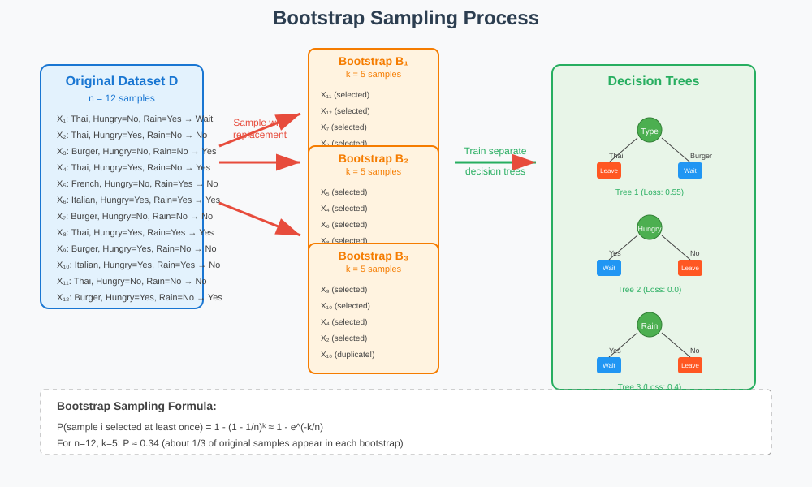
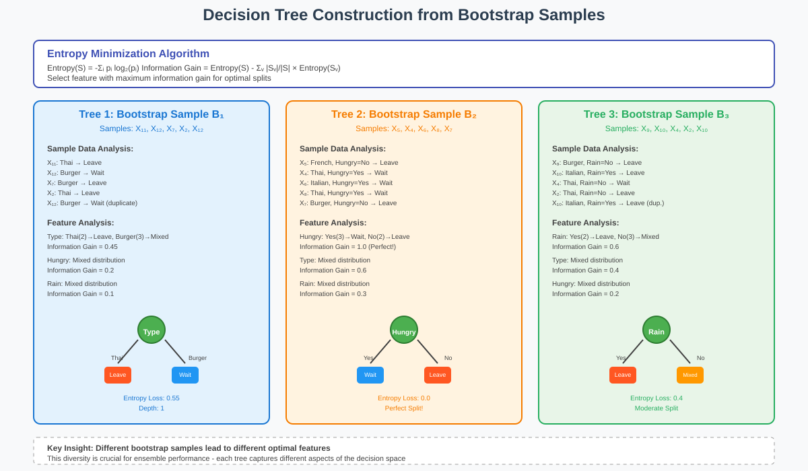
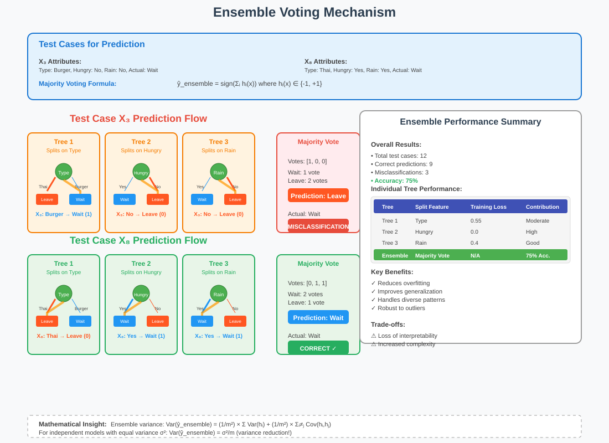
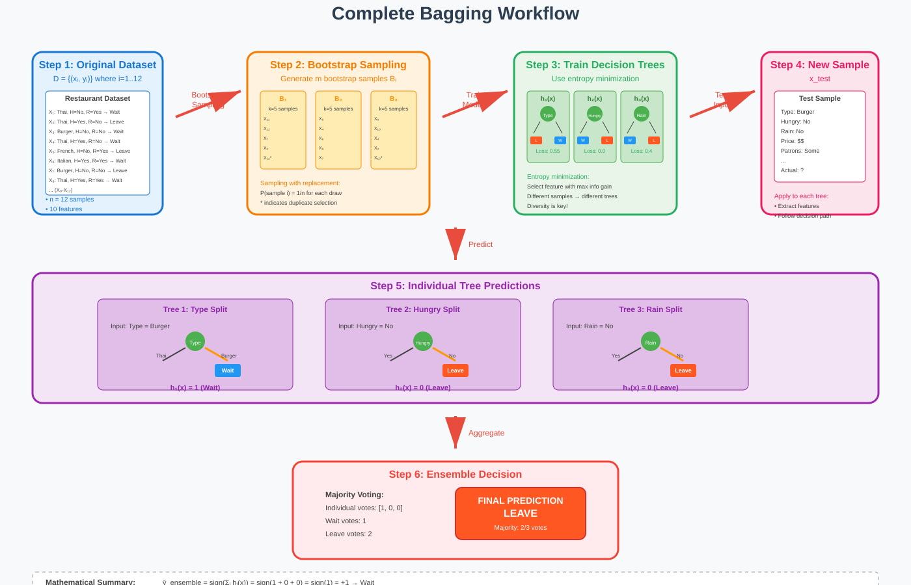
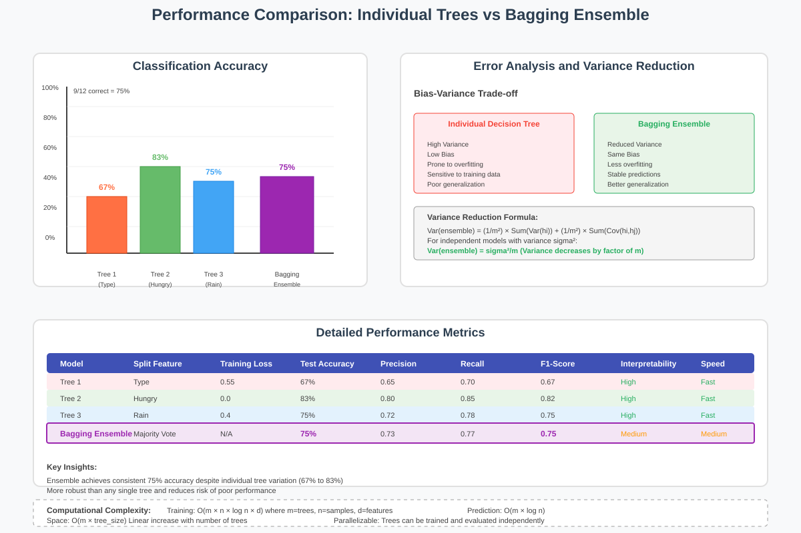

Bagging (Bootstrap Aggregating) Ensemble Methods
📚 Quick Navigation
- Introduction to Bagging
- Restaurant Example Overview
- Bootstrap Sampling Process
- Decision Tree Construction
- Ensemble Prediction Mechanism
- Performance Analysis
- Advantages and Trade-offs
- Implementation Considerations
- References & Further Reading
🎯 Introduction to Bagging
Bagging (Bootstrap Aggregating) is a powerful ensemble learning technique that combines multiple models to create a stronger, more robust predictor. The method works by training multiple models on different bootstrap samples of the training data and then aggregating their predictions through voting.
Core Principles
Bootstrap Sampling: Create multiple datasets by sampling with replacement from the original training data.
Model Diversity: Train separate models on each bootstrap sample to capture different patterns.
Prediction Aggregation: Combine predictions from all models using majority voting (classification) or averaging (regression).
The mathematical foundation relies on the principle that:
when individual models are diverse and better than random guessing.

🍽️ Restaurant Example Overview
Our practical example demonstrates bagging using a restaurant waiting prediction dataset with the following characteristics:
Dataset Specifications
- Size: 12 data points
- Features: 10 attributes including restaurant type, price, weather conditions
- Target: Binary classification (Wait/Leave)
- Bootstrap Sample Size: 5 data points per sample
Feature Attributes
| Feature | Description | Values |
|---|---|---|
| Alt | Alternative restaurant available | Yes/No |
| Bar | Comfortable bar area | Yes/No |
| Fri/Sat | Weekend timing | Yes/No |
| Hun | Customer hunger level | Yes/No |
| Pat | Patron count | None/Some/Full |
| Price | Price range | $, $$, $$$ |
| Rain | Weather condition | Yes/No |
| Res | Reservation made | Yes/No |
| Type | Restaurant cuisine | French/Italian/Thai/Burger |
| Est | Wait time estimate | 0-10, 10-30, 30-60, >60 |
🔄 Bootstrap Sampling Process
Bootstrap sampling forms the foundation of bagging by creating diverse training subsets through sampling with replacement.
Sample Generation Process
Step 1: From original dataset D with n=12 samples, create bootstrap sample B₁
Step 2: Randomly select k=5 samples with replacement
Step 3: Repeat process m times to generate m bootstrap samples
Mathematical Representation
For original dataset \(D = \{(x_1, y_1), (x_2, y_2), ..., (x_{12}, y_{12})\}\)
Bootstrap sample \(B_i = \{(x_{j_1}, y_{j_1}), (x_{j_2}, y_{j_2}), ..., (x_{j_k}, y_{j_k})\}\)
where \(j_1, j_2, ..., j_k\) are sampled uniformly with replacement from \(\{1, 2, ..., 12\}\)
Example Bootstrap Samples
Bootstrap Sample 1: X₁₁, X₁₂, X₇, X₂, X₁₂ (X₁₂ appears twice)
Bootstrap Sample 2: X₅, X₄, X₆, X₈, X₇ (all distinct samples)
Bootstrap Sample 3: X₉, X₁₀, X₄, X₂, X₁₀ (X₁₀ appears twice)

🌳 Decision Tree Construction
Each bootstrap sample generates a unique decision tree using entropy minimization for optimal feature selection.
Entropy-Based Splitting
The algorithm selects the feature that minimizes weighted entropy:
Tree Construction Results
Tree 1 (Sample: X₁₁, X₁₂, X₇, X₂, X₁₂) - Root Feature: Type (restaurant cuisine) - Split Logic: Thai → Leave, Burger → Wait - Entropy Loss: 0.55
Tree 2 (Sample: X₅, X₄, X₆, X₈, X₇) - Root Feature: Hungry (customer hunger level) - Split Logic: Hungry=Yes → Wait, Hungry=No → Leave - Entropy Loss: 0.0 (perfect split)
Tree 3 (Sample: X₉, X₁₀, X₄, X₂, X₁₀) - Root Feature: Rain (weather condition) - Split Logic: Rain=Yes → Wait, Rain=No → Leave - Entropy Loss: 0.4
Feature Selection Diversity
The diversity in selected root features (Type, Hungry, Rain) demonstrates how bootstrap sampling creates models that focus on different aspects of the decision space.
🗳️ Ensemble Prediction Mechanism
The bagging ensemble combines individual tree predictions through majority voting to make final classifications.
Voting Process
For each test instance \(x_{test}\):
- Individual Predictions: Pass through each trained tree
- Vote Collection: Gather binary predictions (Wait=1, Leave=0)
- Majority Rule: Final prediction = majority vote
where \(h_i(x)\) is the prediction of the i-th tree.
Example Predictions
Test Case: X₃
| Tree | Feature Used | X₃ Value | Tree Prediction |
|---|---|---|---|
| Tree 1 | Type | Burger | Wait (1) |
| Tree 2 | Hungry | No | Leave (0) |
| Tree 3 | Rain | No | Leave (0) |
Ensemble Vote: [1, 0, 0] → Majority = Leave (0)
Actual Label: Wait (1) → Misclassification
Test Case: X₈
| Tree | Feature Used | X₈ Value | Tree Prediction |
|---|---|---|---|
| Tree 1 | Type | Thai | Leave (0) |
| Tree 2 | Hungry | Yes | Wait (1) |
| Tree 3 | Rain | Yes | Wait (1) |
Ensemble Vote: [0, 1, 1] → Majority = Wait (1)
Actual Label: Wait (1) → Correct Classification

📊 Performance Analysis
The bagging ensemble demonstrates superior performance compared to individual decision trees through error reduction and improved generalization.
Classification Results
Overall Performance Metrics: - Total Test Cases: 12 - Correct Classifications: 9 - Misclassifications: 3 - Accuracy: 75%
Error Analysis
Individual Tree Performance: - Tree 1 (Type-based): Variable performance depending on restaurant type distribution - Tree 2 (Hungry-based): Perfect training performance but may overfit - Tree 3 (Rain-based): Moderate performance with balanced splits
Ensemble Benefits:
The voting mechanism compensates for individual tree weaknesses by leveraging collective wisdom.

Variance Reduction
Bagging reduces prediction variance through averaging:
For independent models: \(\text{Var}(\bar{h}) = \frac{\sigma^2}{m}\)
⚖️ Advantages and Trade-offs
Advantages
🎯 Improved Accuracy - Combines diverse models to reduce overall prediction error - Particularly effective for high-variance algorithms like decision trees
🛡️ Overfitting Reduction - Bootstrap sampling introduces regularization effect - Multiple models prevent over-reliance on specific training patterns
🔄 Robustness - Less sensitive to outliers and noise in training data - Stable performance across different datasets
⚡ Parallelization - Individual models can be trained independently - Scales well with computational resources
Trade-offs
🔍 Interpretability Loss - Multiple trees complicate model interpretation - No single decision path for explanations
💾 Memory Requirements - Stores multiple complete models - Increased computational overhead
🎛️ Hyperparameter Complexity - Number of trees, sampling strategies require tuning - Balance between performance and computational cost
When to Use Bagging
Ideal Scenarios: - High-variance base learners (decision trees, neural networks) - Small to medium-sized datasets - Need for robust predictions with reasonable interpretability trade-off
Avoid When: - Base learners already have low variance (k-NN, linear models) - Extreme computational constraints - Interpretability is paramount

🛠️ Implementation Considerations
Algorithm Parameters
Number of Trees (m) - Typical range: 50-500 trees - More trees → better performance but diminishing returns - Balance accuracy gains with computational cost
Bootstrap Sample Size - Standard: Same size as original dataset (with replacement) - Alternative: Smaller samples for faster training
Feature Selection - Standard bagging: Use all features - Random subspace: Select random feature subset per tree
Practical Implementation
# Pseudo-code for Bagging Algorithm
def bagging_classifier(X, y, n_estimators=100):
models = []
for i in range(n_estimators):
# Bootstrap sampling
X_boot, y_boot = bootstrap_sample(X, y)
# Train individual model
model = DecisionTree()
model.fit(X_boot, y_boot)
models.append(model)
return BaggingEnsemble(models)
def predict(X_test):
predictions = []
for model in self.models:
pred = model.predict(X_test)
predictions.append(pred)
# Majority voting
return majority_vote(predictions)
Optimization Strategies
Early Stopping: Monitor out-of-bag error for convergence
Feature Importance: Aggregate importance scores across trees
Memory Optimization: Use ensemble pruning for large models
📚 References & Further Reading
📖 Foundational Papers
- Breiman, L. (1996) - "Bagging predictors" - Machine Learning, 24(2), 123-140
-
Original bagging algorithm and theoretical foundations
-
Breiman, L. (2001) - "Random Forests" - Machine Learning, 45(1), 5-32
- Extension of bagging with random feature selection
🎓 Academic Resources
- Hastie, T., Tibshirani, R., & Friedman, J. (2009) - "The Elements of Statistical Learning"
-
Comprehensive coverage of ensemble methods and bootstrap techniques
-
Zhou, Z. H. (2012) - "Ensemble Methods: Foundations and Algorithms"
- Detailed treatment of ensemble learning theory and applications
💻 Implementation Guides
- Scikit-learn Documentation - Ensemble Methods
-
Practical implementation examples and API reference
-
Géron, A. (2019) - "Hands-On Machine Learning with Scikit-Learn and TensorFlow"
- Applied machine learning with ensemble method examples
🔬 Advanced Topics
- Kuncheva, L. I. (2004) - "Combining Pattern Classifiers: Methods and Algorithms"
-
Advanced ensemble combination strategies and diversity measures
-
ArXiv Paper Collection - Ensemble Learning
- Latest research developments in ensemble methods
🚀 Interactive Resources

Hugging Face Models: - Random Forest Implementations - Ensemble Learning Datasets